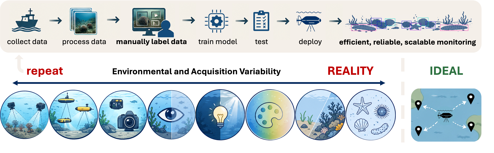
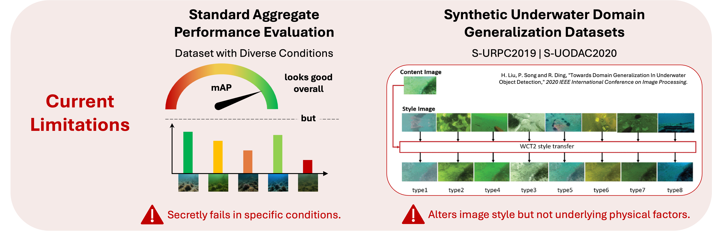
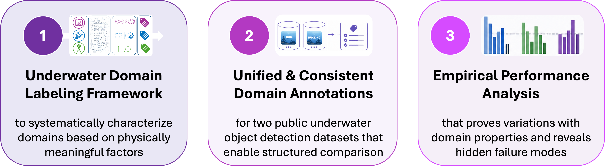

Habitat-Rich Boulder Reef
with blue tint and strong light penetration

Domain shift, where deviations between training and deployment data distributions degrade model performance, is a key challenge in underwater environments. Existing benchmarks testing performance for underwater domain shift simulate variability through synthetic style transfer. This fails to capture intrinsic scene factors such as visibility, illumination, scene composition, or acquisition factors, limiting analysis of real-world effects. We propose a labeling framework that defines underwater domains using measurable image, scene, and acquisition characteristics. Unlike prior benchmarks, it captures physically meaningful factors, enabling semantically consistent image grouping and supporting domain-specific evaluation of detection performance including failure analysis. We validate this on public datasets, showing systematic variations across domain factors and revealing hidden failure modes.

Underwater object detection enables scalable marine monitoring by automating the identification of key benthic species that are important indicators of ecosystem health and human impact. However, training deep learning models for such a task usually requires collecting and manually labeling lots of data first, which is expensive and time-consuming. Therefore, in a perfect world a detector would only be trained once, and then reused across locations and environments. But because underwater conditions change constantly - from water turbidity, currents and depth, over temperature, time, seasons and weather, to region-dependent topography variations - models struggle to generalize and are faced with domain shift problems.

Most existing underwater object detection approaches evaluate performance using aggregate metrics across mixed environmental conditions, hiding failures in specific real-world scenarios. While some methods address domain generalization ny deviding data into separapable types, they rely on artificial style transfer, only altering the image look without capturing the physical and environmental factors driving true domain shift. So what is missing is a way to describe and analyze underwater domains that is both interpretable and grounded in real-world conditions.
We therefore ask:
How can domain variability in underwater imagery be decomposed into interpretable and measurable factors that enable consistent grouping of images? And to what extent do these domain-specific factors influence object detection performance across different conditions?
We propose a domain labeling framework that decomposes underwater variability into three interpretable axes: image appearance, scene composition and acquisition geometry. Each axis is then split into categories: visibility - illumination - color, layout - scale - background, and orientation - perspective. These are quantified using consistent metrics to capture image-specific properties. Based on the computed values, each image is assigned a set of categorical labels, for example: low - bright - blue, sparse - small - textured, and upright - front. Our lables describe image characteristics across all three axes based on physically meaningful, measurable factors, providing a structured way to analyze how detection performance changes across different environmental conditions.
We apply our labeling pipeline to the public DUO and RUOD-4C underwater object detection datasets and train a YOLO26n model as detector in mixed conditions. Performance is evaluated on an unseen test split, separately for every domain category, recording standard overall performance metrics and additionally computing error rates per object (based on model predictions with IoU and confidence threshold = 0.5). Results show that detection performance varies substantially across different environmental and acquisition conditions. High visibility consistently outperforms low visibility, bright images perform better than dark scenes, and blue distorted images that often correlate with higher visibility and illumination also show better performance. As expected, larger objects are detected much easier than smaller ones, whereas the detector counterintuitively favors crowded scenes and complex backgrounds, highlighting the importance of context. Camera orientation and perspective are more class-dependent: while upright and front-facing images achieve the best results overall, this has larger variations on species level.

With this work, we provide a useful tool to better analyze and understand underwater domain shift, and offer useful insights for developing more robust underwater object detection models in future.
@misc{wille2026domainmatterspreliminarystudy,
title={Why Domain Matters: A Preliminary Study of Domain Effects in Underwater Object Detection},
author={Melanie Wille and Dimity Miller and Tobias Fischer and Scarlett Raine},
year={2026},
eprint={2604.26174},
archivePrefix={arXiv},
primaryClass={cs.CV},
url={https://arxiv.org/abs/2604.26174}}This research was supported by the QUT Centre for Robotics, QUT Digital Research Infrastructure team for HPC, and an ARC DECRA Fellowship DE240100149 to TF.